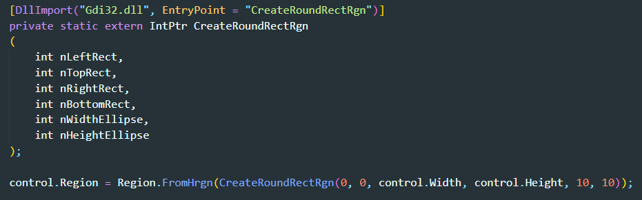

RadiusTool
前言
圓角設計是目前視覺設計中最重要的元素之一，
從現實生活的物品，到軟體及網頁介面，都能發現圓角的蹤跡。
所以在ATSystem介面設計上也應用了圓角視覺效果，但C# winform 中沒有直接對元件設定的方法，
而是要透過Win32 的Dll檔或第三方開發的Dll檔才能實現；但大部分第三方開發是需支付額外費用
所以在ATSystem開發上使用的是免費的XanderUI，雖然免費但功能不是很齊全，
除了按鈕元件外其他元件就必須使用Win32 dll來實現。
程式碼 :

Gdi32.dll :
1. 為一種Win32 dll檔
2. 動態連結程式庫
(1) dynamic-link library 的縮寫
(2) 是在Windows中實現"共享函式庫概念"的一種實作方式
3. 全名為 Graphics Device Interface
4. 完成與繪製有關的工作
(1) 輸出到顯示卡和列印機的原生繪圖功能
(2) 文字輸出
(3) 字型管理
CreateRoundRectRgn 函式 :
1. 建立有圓角的矩形區域。
2. 參數說明:
(1) nLeftRect : 指定矩形左上角Ｘ座標。
(2) nTopRect : 指定矩形左上角Ｙ座標。
(3) nRightRect : 指定矩形右下角Ｘ座標。
(4) nBottomRect : 指定矩形右下角Y座標。
(4) nWidthEllipse : 指定圓角寬度。
(4) nHeightEllipse : 指定圓角高度。